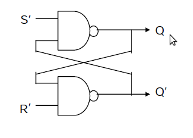
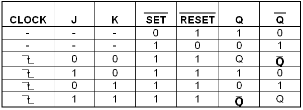
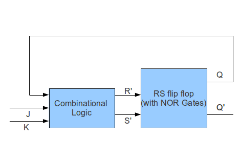

In electronics, a flip-flop or latch is a circuit that has two stable states and can be used to store state information. The circuit can be made to change state by signals applied to one or more control inputs and will have one or two outputs. Flip-flops and latches are a fundamental building block of digital electronics systems used in computers, communications, and many other types of systems. Flip-flops and latches are used as data storage elements. Such data storage can be used for storage of state, and such a circuit is described as sequential logic. When used in a finite-state machine, the output and next state depend not only on its current input, but also on its current state (and hence, previous inputs.) It can also be used for counting of pulses, and for synchronizing variably-timed input signals to some reference timing signal. Flip-flops can be either simple (transparent or opaque) or clocked (synchronous or edge-triggered); the simple ones are commonly called latches. The word latch is mainly used for storage elements, while clocked devices are described as flip-flops.

NAND and NOR Latches
NOR Latch

It can be constructed from a pair of cross-coupled NOR logic gates. The stored bit is present on the output marked Q. While the S and R inputs are both low, feedback maintains the Q and Q outputs in a constant state, with Q the complement of Q. If S (Set) is pulsed high while R (Reset) is held low, then the Q output is forced high, and stays high when S returns to low; similarly, if R is pulsed high while S is held low, then the Q output is forced low, and stays low when R returns to low.
NAND Latch
This is an alternate model of the simple SR latch built with NAND logic gates. Set and reset now become active low signals, denoted S and R respectively. Otherwise, operation is identical to that of the SR latch. Historically, SR-latches have been predominant despite the notational inconvenience of active-low inputs
JK Flip Flop

JK flip flop is mostly implemented as Master Slave flip flop. The information present at at J and K inputs is transmitted to master flip-flop on positive edge of a clock pulse and held there until negative pulse occurs, after which it is allowed to pass through the slave flip-flop.
JK Timing Digram

The following Digram depicts the change of JK flip flop Output with time pulse. It is negativve edge triggered.
Truth Table
The following digram depicts the truth table of JK Flip Flop.

- The objective of this experiment is to understand the working of the Flip Flops.
- Try to make basic Flip Flops like JK, RS , T , D Flip Flops.


Digital Logic Design
This experiment is designed to simulate any digital logical circuit.Following are the instruction for building the circuit.The whole Applet consist of mainly four pannels i.e Left Pannel , Mid Pannel , Right Pannel and Top Pannel.
- Left Pannel
- Gate Combobox: So this combox box is used to select basic gates like and,or,exor,not,nor,nand ,exnor and connector .Once Gate is selected then corresponding number of inputs can be selected from the combo box adjacent to it.After clicking this you just have to click on mid pannel drawing area, and gate will be placed at that particular location.
- Probe:Generaly terminal output is shown by default, if you want explicitly Input and output of various node , then you have to probe it.
- None:It is used to get default cursor option back, so that you can do basic operation like drag and drop .
- Delete Element: This is used for explicitly deleting certain element. You just have to click on those element.
- Connect/Disconnect:This used for establishing and removing connection between various element. Connection can be established only from output to input.You have to first click to the output node then to the input node(consist of red square box) . For disconnection , also same procedure but this time you can start by clicking either of input or output node.
- Naming:This is used for giving name to either input or output node. Just click on the node, then one input box will pop out in which you can give the name.
- Output:Generally this is used for explicitly defining yhe output node. Its purpose will be more clear in explanation of import button.
- Time PulseYou have to enter time pulse in definate pattern i.e
: , , , and so on.For ex: 0,10,10,10,10 . After that press enter or click on the new timepulse. Then, it will be created and available as input in list box. - Binary One And ZeroThese are used to give value to terminal input and output
- Top Pannel
- Clear:It is used to clear every element on the circuit
- Save:It is used for saving the circuit as file which can be loaded and imported.
- Load:It load the save circuit as it is without any change. It would be fresh circuit with no previous value stored.
- Import:Now it is a very important feature. It is simmilar to load , but circuit will appear as black box with terminal input ,terminal output and those output which are set by the output button on left pannel. So, in this recursively you can make many circuit.The input and output nodes will come in order of top to bottom on the basis of there vertical position while saving.It is imported as geeneric element whose name is derived from saved file's name.
- Simulate:This is used to compute the whole circuit , if all the terminal inputs are present . It also compute the gate delays , which can be known by hovering the mouse over the gates. By default gate delay is kept to be -1. Simulation can fail or give ambiguous result if circuit do not stablizes with time. This generally happens in the case of improper construction of feedbacks. For ex : If You use direct feedback in flip flop it will give You wrong or no result , i.e why use master slave architecture to build flip flop.
- Mid Pannel:It is the just drawing area used for building various circuits.You can move various element in mid pannel by simple drag and drop.
- Right Pannel:It is used for showing time varying terminal inputs ,outputs and also probed input and output.It will have element name and input or output index associated with it. Indexes are given top to bottom.

1) Design a master slave J-K flip flop as given in the Theory section. Use any of the clock cycles available. Give a sequence of J-K inputs for eg: 01, 10 , 00 , 00, 11 , 11, 01 etc and verify the output of the filp flop. Save this flip flop by marking appropriate inputs and outputs.
2) Import the J-K flip flop designed in 1st question. Connect the J-K to each other and label it as 'T'. The resulting flip flop is called a toggle flip flop. Generate a clock pulse or use any of the available ones. Verify that when T is 0, the output of flip flop does not change. When T=1, the output toggles at every negative edge of the clock. Save this circuit as a 'T' flip flop
3) Import the J-K flip flop designed in 1st question. Connect the compliment of J to K and label J as 'D'. The resulting flip flop is called a D flip flop. Generate a clock pulse or use any of the available ones. Verify that when D=1, output of flip flop is Q=1 and when D=0, output of flip flop is Q=0. Save this circuit as 'D' flip flop.
4) You are given a master slave RS flip flop made from NOR gates. Using this, design a circuit which behaves like a JK flip flop. The design can be like this :


- With The help of Theory Page , try to build the Flip Flop Circuit.
- First of all build the RS Flip Flop Circuit
- Then use RS Flip Flop to build D Flip Flop
- Then make J K Flip Flop
- Use J K Flip Flop to make T Flip Flop
- If You are unable to make it , load or export the circuit directly and use it
- Use time variant Input pulse to analyze the output

- Flip Flops - Wikipedia
- Chapter 6 : Sequential Logic, "Digital Logic and Computer Design" - M. Morris Mano